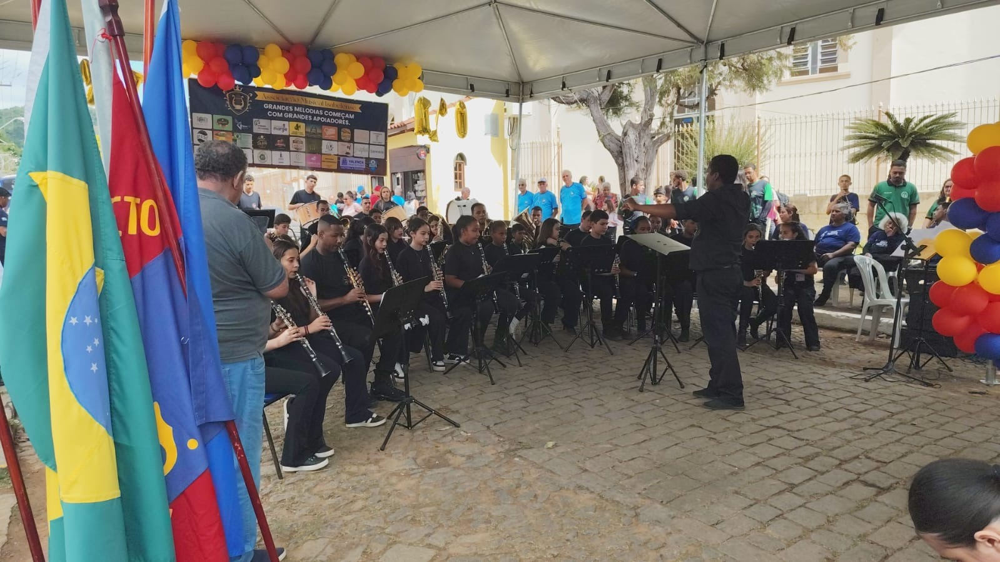

Onde a música encontra novas comunidades.

A música não precisa estar longe para transformar uma vida.
Por meio de seus polos de formação, a Corporação Musical Visconde de Mauá aproxima a educação musical de diferentes comunidades da Serra da Mantiqueira, criando espaços para aprender, praticar, conviver e fazer música.
Cada polo possui sua própria realidade, seus grupos e suas atividades, mas todos fazem parte de uma mesma rede de formação construída pela COMVIMA.
A atuação da Corporação se estende por diferentes localidades de Minas Gerais e do Rio de Janeiro, levando atividades de formação musical para mais perto das comunidades.
Atualmente, os polos e núcleos de atuação incluem:
Em cada local, as atividades são organizadas de acordo com as características da comunidade, a faixa etária dos alunos e a etapa de formação musical.
O polo de Bocaina de Minas desenvolve atividades voltadas à iniciação e à formação musical de novos alunos. O trabalho envolve musicalização, conhecimentos de teoria musical e iniciação instrumental, criando uma base para que os participantes avancem gradualmente em seus estudos.
A formação também integra uma proposta maior de fortalecimento da cultura musical do município e de preparação de novos músicos para uma futura estruturação de uma banda de música.
Projeto relacionado: Formação Musical de Base — Bocaina de Minas.
Em Santo Antônio do Rio Grande, a COMVIMA desenvolve atividades de formação musical aproximando crianças e jovens do universo da música. As aulas proporcionam o primeiro contato com elementos da linguagem musical e com a prática instrumental, criando uma base para o desenvolvimento dos alunos.
O polo também integra a estratégia de expansão da formação musical no município de Bocaina de Minas e de construção de uma nova geração de músicos na região.
Projeto relacionado: Formação Musical de Base — Bocaina de Minas.
Mirantão faz parte da rede de atuação da COMVIMA na Serra da Mantiqueira. No local, as atividades aproximam a comunidade da educação musical e da tradição das bandas, oferecendo oportunidades de aprendizagem e participação em atividades coletivas.
O trabalho busca criar um ambiente onde a música possa fazer parte da rotina da comunidade, permitindo que novos alunos descubram instrumentos, desenvolvam conhecimentos musicais e avancem em sua formação.
Projeto relacionado: SSS da Mantiqueira — Sopro, Sonho e Semeadura da Cultura de Bandas Tradicionais.
Visconde de Mauá é o território de origem da Corporação Musical Visconde de Mauá. É também onde se concentra uma parte fundamental de sua trajetória de formação musical, ensaios e apresentações.
Aqui, diferentes gerações de alunos e músicos encontram-se para aprender, praticar e fazer música juntos. O trabalho desenvolvido em Mauá reúne formação musical, musicalização, prática de banda, ensaios e atividades voltadas à preparação dos músicos para apresentações públicas.
Projetos relacionados: Formação Musical da COMVIMA e Corporação Musical Visconde de Mauá.
Vale das Flores integra a rede de atuação da Corporação Musical Visconde de Mauá, ampliando a presença da formação musical para novas comunidades.
A proposta é aproximar os participantes da música por meio de atividades educativas e coletivas, criando oportunidades para o desenvolvimento musical e para a convivência através da arte. Cada novo espaço de formação representa também a possibilidade de descobrir novos talentos e fortalecer a cultura musical da região.
As atividades desenvolvidas no polo são organizadas de acordo com o grupo atendido e com a programação da COMVIMA.
Projeto relacionado: SSS da Mantiqueira — Sopro, Sonho e Semeadura da Cultura de Bandas Tradicionais.
Embora cada comunidade tenha sua própria dinâmica, os polos compartilham um mesmo caminho de formação.
O primeiro contato com sons, ritmos, instrumentos e elementos da linguagem musical.
Conhecimentos que ajudam o aluno a compreender, ler e interpretar a música.
Os primeiros passos no aprendizado de um instrumento musical.
Aprender a ouvir, acompanhar e tocar junto com outras pessoas.
Momentos de aprofundamento, prática e desenvolvimento coletivo.
A oportunidade de transformar o aprendizado em experiência musical diante da comunidade.
Os polos da COMVIMA não são apenas locais onde acontecem aulas. São espaços de encontro, aprendizado e convivência.
É neles que muitos alunos têm seu primeiro contato com um instrumento. É neles que surgem novas amizades, novos músicos e novas possibilidades.
Ao conectar diferentes comunidades, a Corporação amplia o acesso à música e contribui para manter viva a tradição das bandas musicais na Serra da Mantiqueira.
Uma comunidade aprende.
Outra comunidade toca.
E a música conecta todas elas.
A COMVIMA trabalha com diferentes faixas etárias e níveis de conhecimento musical. Há atividades voltadas para quem está tendo seu primeiro contato com a música e também para alunos que já estão avançando em sua formação.
A disponibilidade de turmas, instrumentos, horários e faixas etárias varia de acordo com cada polo.
Não é necessário ter experiência musical para começar.
Se você quer aprender música, conhecer um instrumento ou fazer parte de uma banda, procure o polo mais próximo e venha conhecer a Corporação Musical Visconde de Mauá.
Quero participarMúsica que chega mais perto.
Música que reúne pessoas.
Música que transforma.